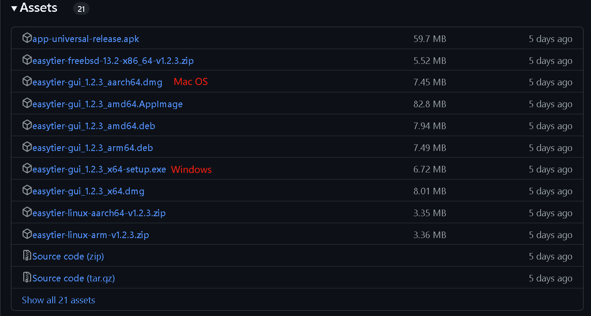
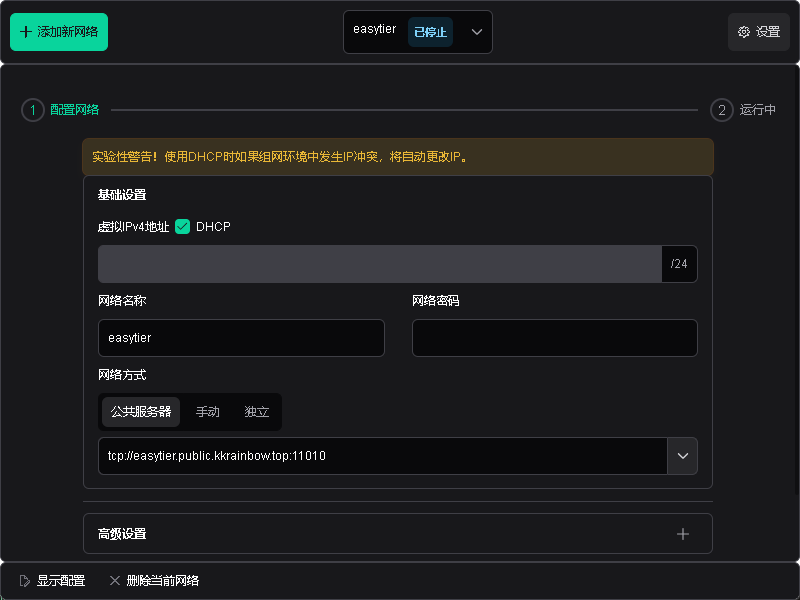
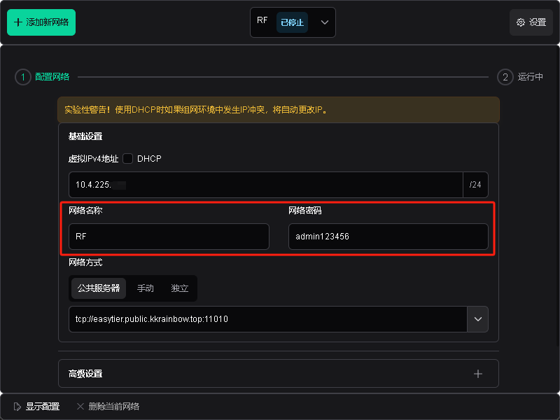
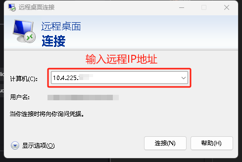

基于EasyTier组网的远程桌面连接
刘铭
Aug, 30, 2024
下载EasyTier
进入EasyTier的Github界面下载适应计算机系统版本的安装包进行安装

Download
安装EasyTier
按照安装软件的正常程序进行安装即可，安装位置可随意更改。
打开EasyTier

EasyTier GUI
输入同一组网的网络名称和密码

同一组网账号密码
打开远程桌面连接

Remote Desktop Connect
完成连接
注意：现在工作站使用的是流量下的外网，请不要传输大文件、打开ihepbox进行同步等耗费流量的操作！